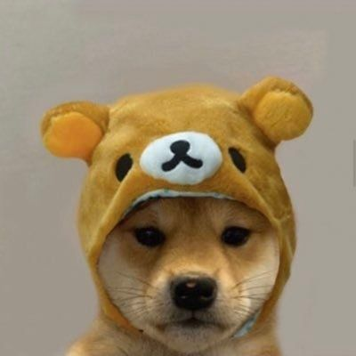
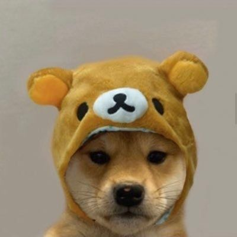
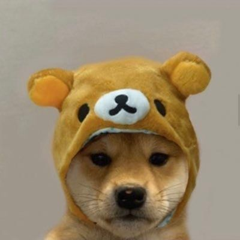
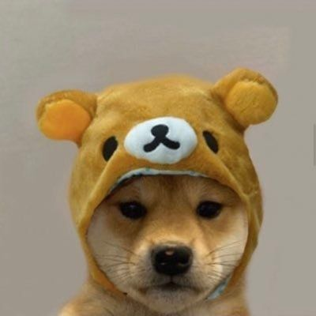
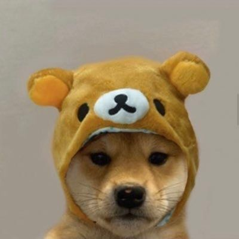

Apie
Aš esu Tomas Bitvinskas, 20 metų jaunuolis.
Faktai
Gimiau 2003m. vasario 27 dieną
Mokausi Vilnius TECH universitete.
Esu aukštas, 194cm ūgio.
Labai mėgstu sportą, ypač sporto klubą.
Turiu šuniuką. Mėgstu gyvūnus.

Įgūdžiai
Programavimas.
Sportiškumas.
Vairavimas.
Video
IFrame pvz
Audio
 


